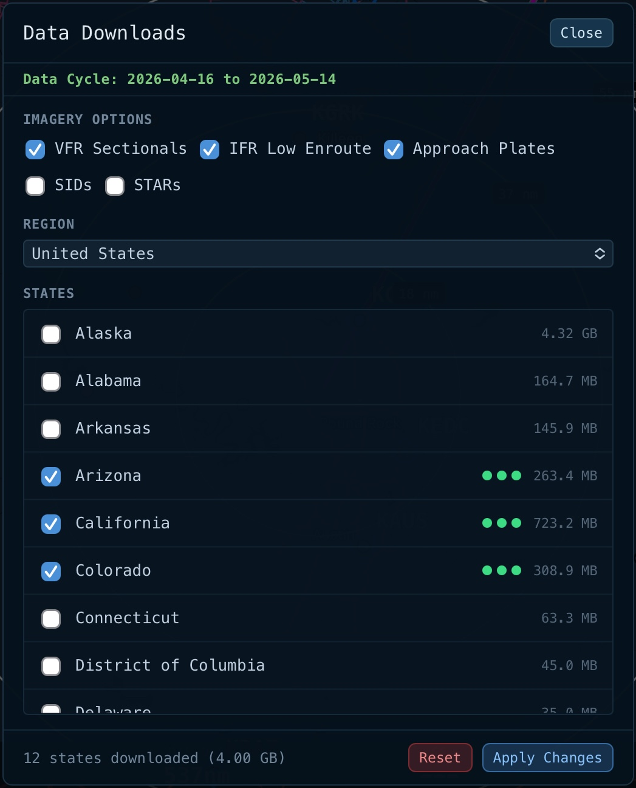

Static screenshot from live webfs — too much iOS signaling to recreate. Edit
#downloads-overlay
in webfs to iterate. Full-context screenshot at
assets/downloads_dialog_full.jpeg
.

SANDBOX · downloads